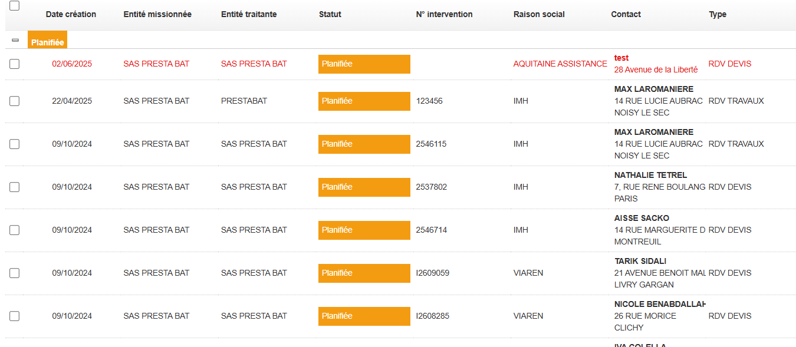
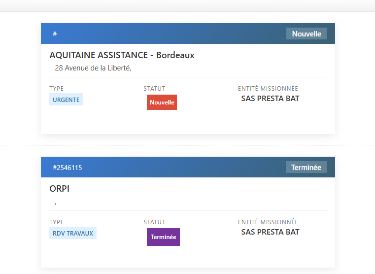
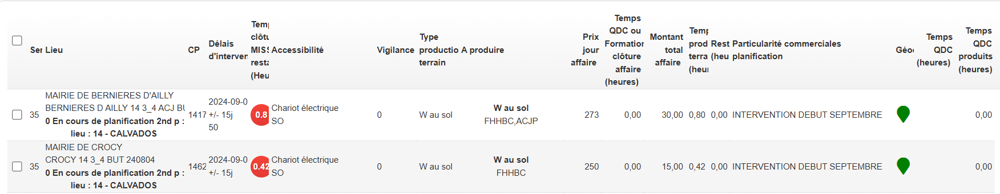
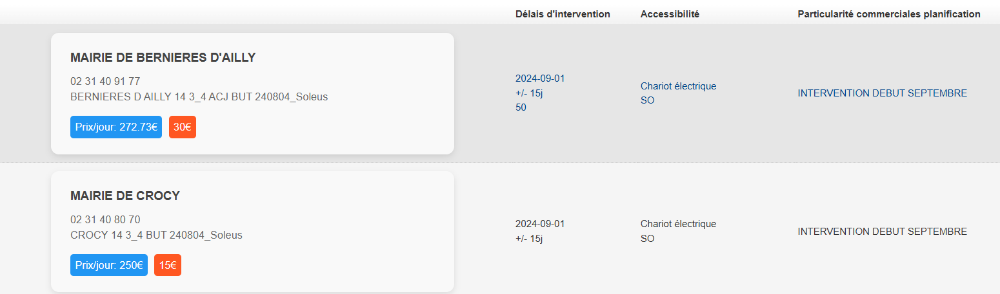
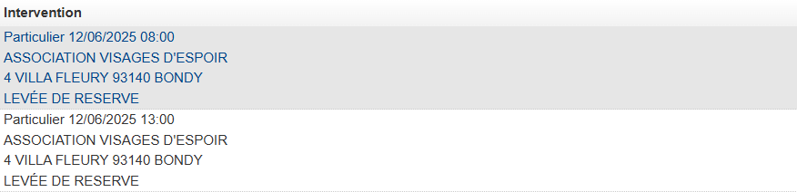
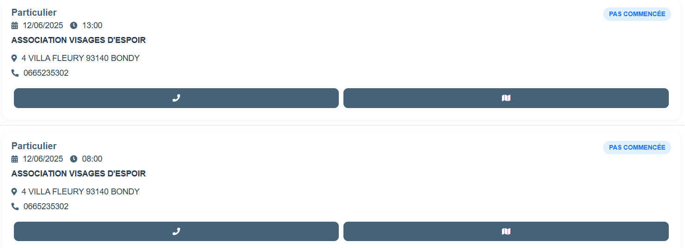
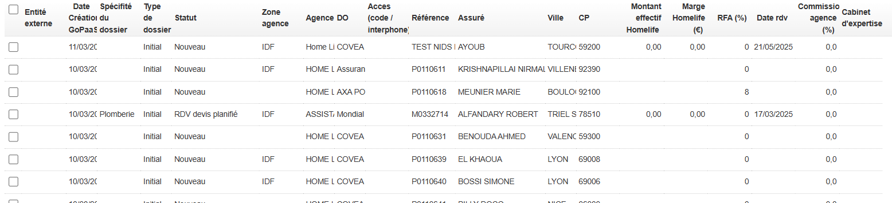
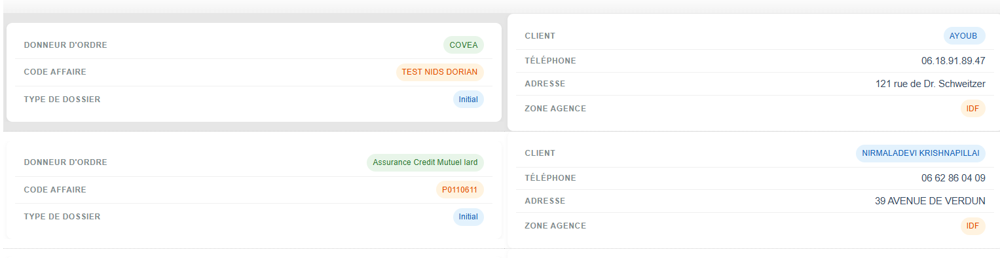
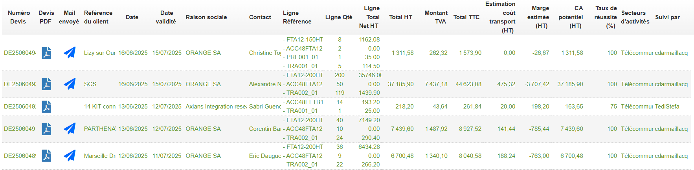

Gooriah Julian
Étudiant BTS SIO - Option SLAM
Formation
BTS Services Informatiques aux Organisations, option Solutions Logicielles et Applications Métiers (SLAM)
Stage
2 mois de stage dans une entreprise informatique spécialisée en développement d'applications métier
Objectif
Approfondissement des compétences et découverte du monde professionnel
Mon Parcours
2024-2025 - BTS SIO SLAM (1ère année)
École : Ipssi
Approfondissement des compétences en développement, gestion de projets et veille technologique. Stage de 2 mois en entreprise.
2023-2024 - Baccalauréat
Spécialité : Mathématiques / SES (Science Economique et Sociale)
Obtention du baccalauréat
Expériences Professionnelles
Formation ADMIN (Janvier 2023) et Stage de 2 mois au sein de l'entreprise Nids
Secteur : Création d'applications métiers sur mesure
Taille : TPE de 8 employés
Missions durant la Formation :
- Formation: Utilisation de l'outil GoPaas permettant de créer des applications métiers fiables et évolutives
Stage:
- Création d'une application métier pour la gestion de joueurs de foot
- Création de vues HTML et CSS pour l'ergonomie des applications suite à la demande des clients
Mes Compétences
Tableau de Synthèse - Compétences Majeures SLAM
Voici les 5 compétences principales développées selon le référentiel BTS SIO :
Description :
Description :
Description :
Description :
Description :
Langages de Programmation
Mes Projets
Projets chez Nids
Tout les projets durant mon stage a été réalisé avec la plateforme GoPaas. Cette plateforme permet de créer et de gérer des applications métiers. Elle est simple, rapide et évolutive. Elle permet également de générer de nouvelles fonctionnalités en quelques heures et sans utiliser une seule ligne de code (no code/low code).
1er projet : Création d'application permettant de simplifier la gestion des joueurs du monde.
Mission : Créer une application simple et agile pour simplifier la gestion de millier de joueurs de foot dans tout le monde.
Page de Connexion - ISC.PRO.WORLD
Dashboard Accueil de l'application 'ISC PRO WORLD'
Apercu de 4 icones (Joueurs, Attributs,Observation et Test). Ces quatres modules principaux organisés en cartes sont des tables
Interface de Gestion des Joueurs - ISC.PRO.WORLD
Cette table 'Joueurs' est un moyen pour les recruteurs de gérer les joueurs grace à des vues qui permettent de différencier chaque joueur avec les notes, les images etc ...
Création/Édition de Joueur - ISC.PRO.WORLD
Lorsque l'on clique sur une des vues ou sur le bouton 'Ajouter', cela nous amène dans une interface qui permet de voir ou de modifier les caractéristiques des joueurs. Nous pouvons également ajouter des 'Test' au joueur des 'Attributs' que ça soit Technique, Tactique, Physique, Mental ou bien l'Intelligence de jeu.
Module d'Évaluation des Attributs - ISC.PRO.WORLD
Cette image présente le module d'évaluation détaillée des attributs d'un joueur dans l'application ISC.PRO.WORLD, affichant une interface d'évaluation complète avec des 'Sliders' interactifs pour noter les compétences tactiques, techniques, physque, mental et intelligence de jeu sur une échelle numérique, chaque section calculant automatiquement une moyenne générale (Tactique: 6,85 et Technique: 6,875), démontrant un système d'évaluation professionnel et précis pour l'analyse des performances sportives de chaque joueurs.
Amélioration des Vues HTML/CSS
Mission : Optimisation de l'ergonomie des applications clientes
VUE pour le client PRESTABAT
Vue GoPaas avant modification
Vue GoPaas après modification
Cette vue est utilisée par 28 techniciens.
VUE pour le client ISCE
Vue GoPaas avant modification
Vue GoPaas après modification
Utilisé par ISCE
VUE pour le client ADSS
Vue GoPaas avant modification
Vue GoPaas après modification
Utilisé par ADSS
VUE pour le client HOMELIFE
Vue GoPaas avant modification
Vue GoPaas après modification
Utilisé par (nb)
VUE pour le client SACREDSUN
Vue GoPaas avant modification
Vue GoPaas après modification

Utilisé par (nb)
Objectifs Techniques :
- Utilisation de la plateforme GoPaas
- Implémenter le responsive design
Objectifs Utilisateurs :
- Assurer la satisfaction client suite aux différentes demandes
- Développer une interface intuitive avec navigation fluide entre les 4 modules principaux
- Améliorer l'accessibilité
Clients
ISCE
Développement d'une app de gestion de budget avec React Native
ADSS
Exploration du machine learning avec Python et TensorFlow
PRESTABAT
Déploiement d'applications sur AWS avec Docker
HOMELIFE
Exploration du machine learning avec Python et TensorFlow
Veille Technologique
Ma Stratégie de Veille
Sources d'Information
Sites Spécialisés
- Stack Overflow
- GitHub Trending
- Dev.to
- MDN Web Docs
Chaînes YouTube
- Grafikart
- Le Designer du Web
- Coding Train
- Fireship
Réseaux Sociaux
- Twitter Tech
- Reddit r/programming
- Discord Tech
Podcasts
- ifttd (If This Then Dev)
- Syntax
- The Changelog
- Code[ish]
Tendances & Innovations Suivies
Intelligence Artificielle
Suivi des développements en IA générative, ChatGPT, GitHub Copilot et leur impact sur le développement logiciel.
Veille activeGoPaas
Évolutions des services AWS, Azure, Google Cloud et technologies containerisées (Docker, Kubernetes).
Formation continueContributions & Partage
Je partage régulièrement mes découvertes via :
- Articles de blog sur les nouvelles technologies testées
- Participation à des forums de développeurs
- Création de projets open source sur GitHub
- Veille partagée avec mes collègues de promotion
Contact
Restons en contact !
votre.email@example.com
06 XX XX XX XX
Votre ville, France
"Passionné par le développement et toujours prêt à relever de nouveaux défis technologiques !"